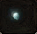

Neumann on Central Plaza
Kill Brahm (Duel quest) to access this quest.
NEED |
ITEM |
QT. |
|  |
Light Crystal Fragment |
3 |
Order:
- Return to your nation's capital
- Talk to the Transporter NPC
- Wait in your nation and you should automatically get a letter
- Click on the pop-ups to read the letter
- Talk to Neumann, Central Plaza
- Exit Astir
- Varik - go to Northern Soplar Highway
- Talk to the flagged NPC
- Varik - talk to Confederation Soldier (H-7)
- Investigate the Foothills of Mt. Jorito
- Go to the Foothills, area G-6 to trigger a cutscene
- Bring 3 Light Crystal Fragments back to G-6
- Get close to the cave entrance to trigger the cutscene
- Light Crystal Fragments drop from:
- Lv35 Dynarats
- Lv45 Brutal Rat (boss)
- Mt. Jorito
- Lv24 Kobolds
- Lv32 Kobold Raiders
- Lv38 Kobold Soliders
- El Behd
- Lv48 Kobold ?
- Lv57 Kobold ?
Light Crystal Fragments drop in Mt. Jorito from:
- Kobolds Lv24
- Kobold Raiders Lv32
- Kobold Soliders Lv38
Reward: